Terraform
Terraform 架构和核心概念
什么是 Terraform
resource aws_instance "app" {
ami = data.aws_ami.ubuntu.id
instance_type = var.instance_type
tags = {
Name = "${var.prefix}-meow"
}
}
- 全新的配置语言 HCL(HashiCorp Configuration Language)
- 可执行的文档
- 人类和机器可读
- 简单、易学易用
- 测试、共享、重用、自动化
- 适用于几乎所有的云厂商
什么是 HCL
HCL2 toolkit: https://github.com/hashicorp/hcl
Terraform 使用范式
Terraform + Ansible
Terraform + Kubernetes，Terraform可以用来管理 K8s
Terraform 架构
config 是期望状态
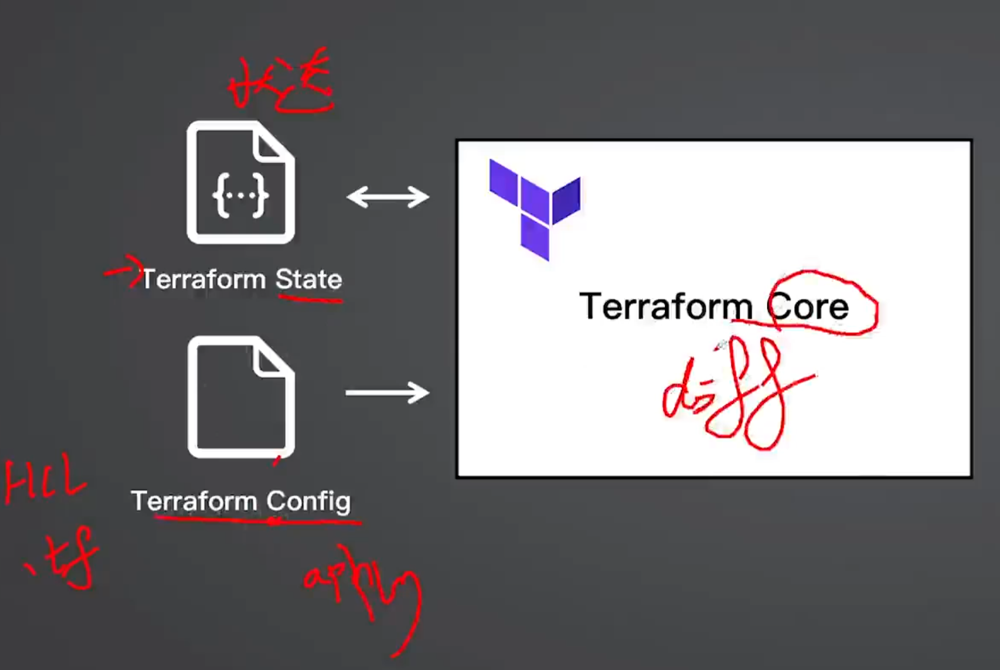
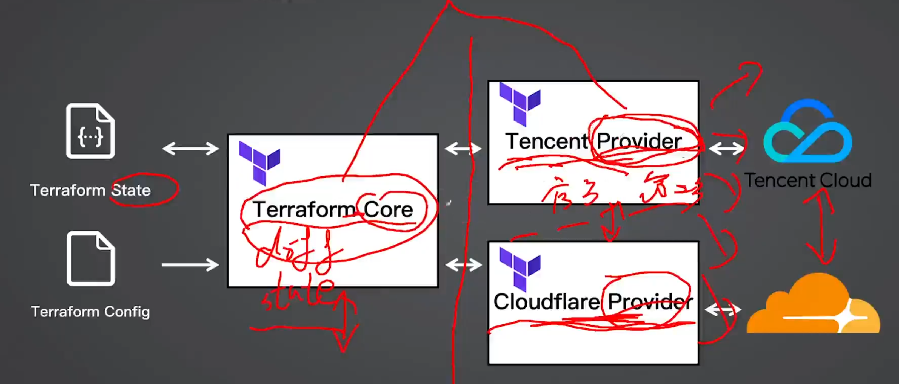
Core 不直接跟云厂商进行交互，而是通过 provider。
provider 相当于插件.
Provider 获取
https://registry.terraform.io/browse/providers

https://registry.terraform.io/providers/hashicorp/aws/latest/docs

Provider 版本控制
- 建议固定版本，防止上游更新导致异常
- 不指定则使用最新版
- 版本操作符：=、!=、\>, >=, <, <=、~>。~> 表示允许小版本号的更新，但是会限制大版本号的更新。
terraform {
required_providers {
aws = {
source = "hashicorp/aws"
version = "~> 5.0"
}
}
}
Terraform 核心命令
Terraform 基本命令
-
terraform init
-
terraform plan
-
terraform apply
-
terraform destroy
-
terraform init --plugin-dir .terraform/providers
- 如果增加、修改或更新了依赖，都需要重新执行 init
-
terraform apply -auto-approve
-
terraform destroy -auto-approve
-
生成依赖关系的svg
terraform graph | dot -Tsvg > graph.svg
Terraform init

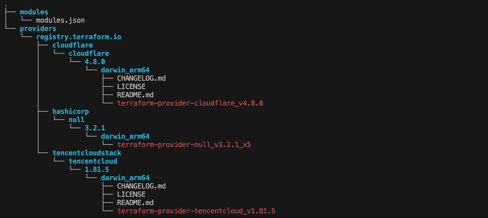
Terraform plan

Terraform apply
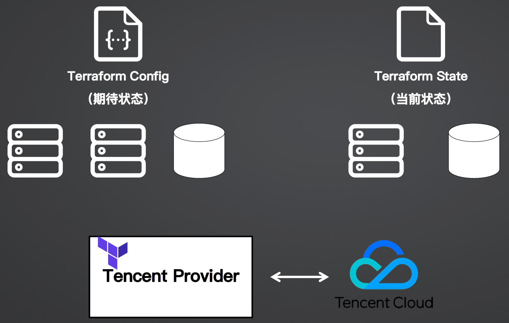
Terraform destroy
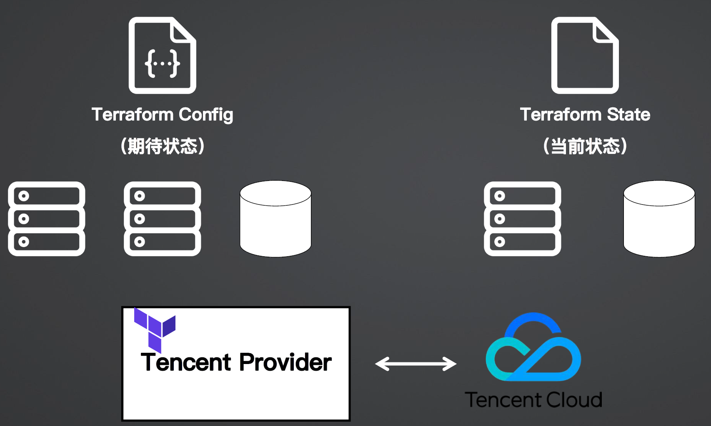
Terraform State File
- terraform.tfstate 文件
- json 格式，记录了真实世界所有的状态
- 包括敏感信息，如虚拟机密码
- 可以存储在本地或者远端（非 Git）
- 随着 destroy 命令而清空
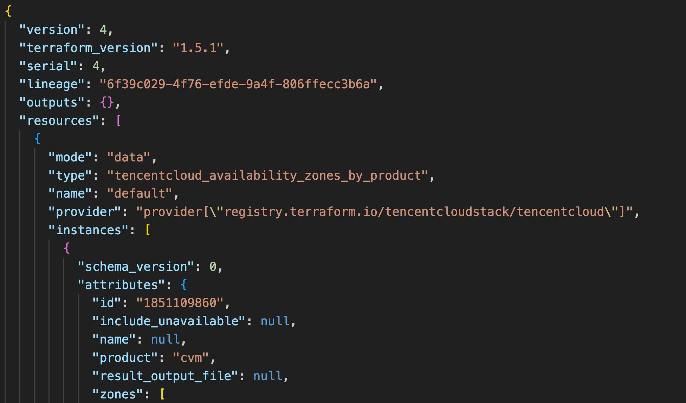
Remote Backend 远端存储
Remote Backend（Terraform cloud）
terraform {
backend "remote" {
organization = "devops-camp"
woraspaces {
name = "course"
}
}
}
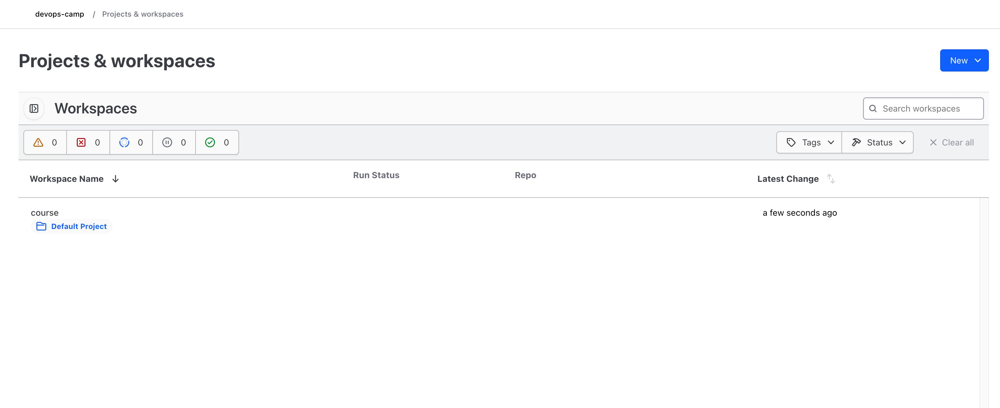
Remote Backend（AWS）
terraform {
backend "s3" {
bucket = ""
key = ""
region = ""
dynamodb_table = ""
encrypt = true
}
}
Remote Backend（Tencent COS）
terraform {
backend "cso" {
region = ""
bucket = ""
prefix = "terraform/state"
}
}
关于 State 的其他命令
- terraform refresh：从基础设施实际状态更新 state 状态
- terraform state list：列出 state 记录的资源
- terraform state rm：删除某些 state 状态
- terraform state pull：从远端拉取状态到本地（灾备）
- terraform state push：更新本地的状态到远端（灾备）
Terraform Layout（推荐布局）
- main.tf：主要的业务逻辑（main.tf 并不是必须的入口文件）
- outputs.tf：定义输出内容
- variables.tf：定义变量参数
- version.tf：定义依赖和版本
main.tf
-
定义基础设施
-
main.tf 也可以超分为多个子文件，terraform 会统一进行加载
- cos.tf
- cvm.tf
- k8s.tf
outputs.tf
- 定义运行结束后所需要输出的内容
- 可设置是否为敏感数据，敏感数据将不输出
- 来源于其他的 resource 的输出内容
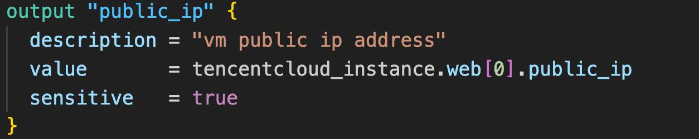
variables.tf
- 定义参数变量，用于在代码中引用
- 可定义类型、默认值、描述、验证函数、是否敏感数据（不在 plan 中显示）

- 访问变量

如何设置 variables？
- 通过在命令行配置：terraform apply -var="prefix=values"
- 指定配置文件：terraform apply -var-file="testing.tfvars"
- 环境变量：export TF_VAR_prefix=values
- 定义的默认值
- 交互式输入
优先级从上（1最高）到下（5最低）对值进行覆盖。
version.tf
- 统一定义项目的 provider 依赖和版本
- 定义 Terraform Cli 最低要求版本
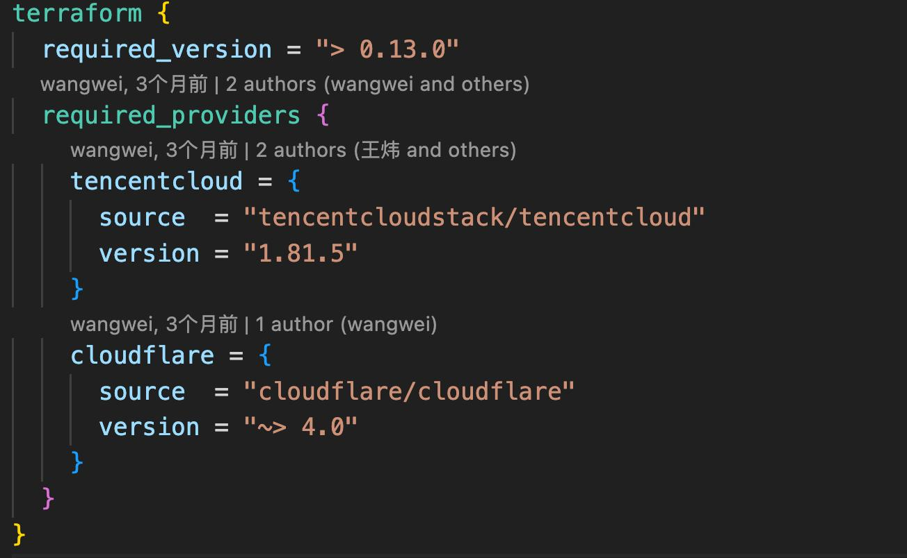
进阶实战
表达式和函数
表达式
- 模板变量
- 值引用
- 运算符
（!, *, /, +, -, >=, ==, !=, &&） - 条件表达式
（<CONDITION> ? <TRUE VAL> : <FALSE VAL>） - For 表达式
（ [for s in var.list : upper(s)] ） - Splat 表达式
（var.list[*].id） - 动态块
- 条件约束（变量类型、版本）
函数
- 数值函数（abs、floor、log、max、min、pow）
- 字符串函数（format、join、lower、regex、replace、split、substr）
- 集合函数（concat、containers、flatten、list、map、merge、reverse、sort）
- 编码函数（base64、json、urlencode、yaml）
- 文件系统函数（dirname、abspath、file、basename、templatefile）
- 时间日期函数（timestamp、formatdate、timeadd）
- 哈希和加密函数（sha1、md5、sha256、sha512、uuiid）
- 类型转换函数（tolist、tomap、toset、tostring、type）
Meta Arguments（元参数）
作用域
- resource 块
- modules
- depends_on（下一个没有引用上一个的值，但是又想要控制顺序时）
- count
- for_each
- lifecycle
depends_on
- Terraform 会自动生成资源的依赖关系图（DAG：有向无环图）
- 根据 DAG 来控制创建和销毁过程（有顺序）
- 可以通过 depends_on 显式指定依赖关系，以控制自愈创建和销毁顺序
- 可用 terraform graph | dot -Tsvg > graph.svg 生成依赖图（graphviz）


count
- 指定创建 N 个资源
- 当需要创建多个相同资源的时候非常有用
- web 这个名称会在后面加 [index]，避免 id 冲突

for_each
- 在单个块中创建多个资源
- 比 count 实现更好的控制
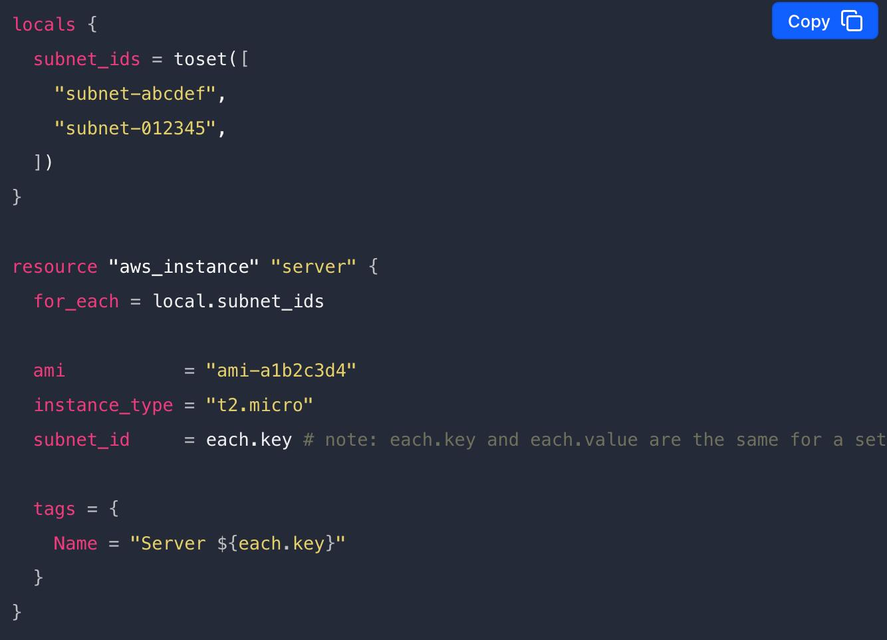
lifecycle
-
create_before_destroy
- 在销毁资源前先进行创建，实现 0 停机
-
prevent_destroy
- 阻止删除
-
ignore_changes
- 忽略差异
-
replace_triggered_by
- 当引用项目发生变化时候替换资源
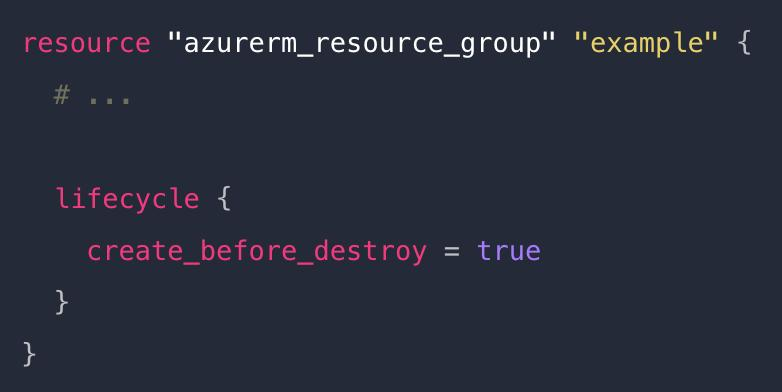
Provisioners
在本地或者远端虚拟机中执行动作
- file
- local-exec
- remote-exec
- vendor
file
将本地文件或目录复制到远端虚拟机
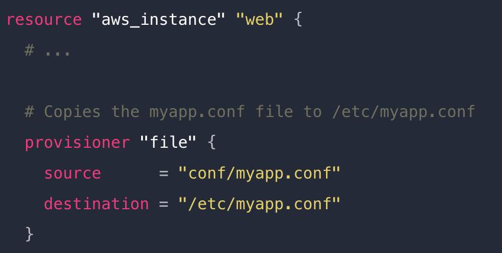
local-exec
在本地执行一段命令
注意平台差异

remote-exec
在远端虚拟机中执行命令
可以是 inline shell 命令，也可以指定 bash 脚本文件（通常配合 file）
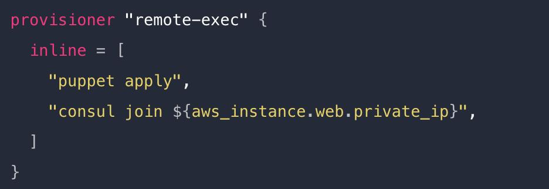
思考：如何创建多环境基础设施
方案一：使用目录区分
在远端虚拟机中执行命令
可以是 inline shell 命令，也可以指定 bash 脚本文件（通常配合 file）
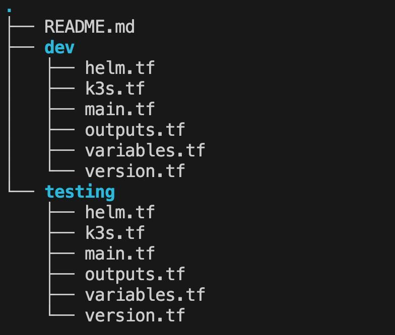
继续深入：修改环境怎么办？
需要同时修改 dev 和 testing 的代码
可维护性差、代码复用性差
方案二：使用 Terraform Workspace
$ terraform workspace list # 列出当前 workspace
* default # default 为默认的 workspace
$ terraform workspace new dev # 创建 dev workspace
Created and switched to workspace "dev"!
$ terraform apply -auto-approve # 在 dev workspace 中创建资源
$ terraform workspace new testing # 创建 testing workspace
Created and switched to workspace "testing"!
$ terraform apply -auto-approve # 在 testing workspace 中创建资源
$ terraform workspace list # 列出所有的 workspace
$ terraform destroy -auto-approve # 删除 testing workspace 的资源
$ terraform workspace select dev # 切换到 dev workspace
$ terraform destroy -auto-approve # 删除 dev workspace 的资源
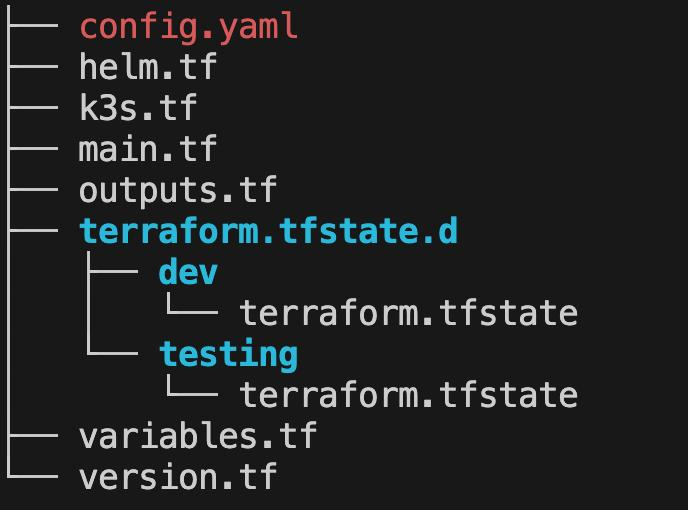
继续深入：workspace VS 目录隔离
Workspace
- 一套代码 N 个环境，实现了代码复用
- 增加了执行上下文的概念，容易出错
- 需通过 terraform workspace list 查看当前上下文
- 通过 terraform.tfstate.d 目录区分状态文件
目录隔离
- 需要同时修改 dev 和 testing 的代码
- 环境目录清晰，不容易出错
- 可维护性差、代码复用性差
继续深入：Module + 目录隔离
Module
-
模块是重用 Terraform 代码的主要方式
-
更好地组织和管理 IaC 源码
- 配置
- 微服务
- 人员角色
Module 的类型
-
根模块：包含所有工作目录下 .tf 文件，默认模块
-
子模块：通过 .tf 文件引用的外部模块
- 本地
- Terraform Registry
- HTTP
- Git
- S3
继续深入：Module 和代码组织结构
├── modules 子模块目录
│ ├── cvm CVM 模块
│ │ ├── main.tf
│ │ ├── outputs.tf
│ │ ├── variables.tf
│ │ └── version.tf
│ └── k3s K3s 模块
│ ├── main.tf
│ ├── outputs.tf
│ └── variables.tf
└── testing testing 环境目录
│ ├── main.tf
│ └── variables.tf
├── dev dev 环境目录
│ ├── main.tf
│ └── variables.tf
dev/main.tf
module "cvm" {
source = "../modules/cvm"
secret_id = var.secret_id
secret_key = var.secret_key
password = var.password
}
module "k3s" {
source = "../modules/k3s"
public_ip = module.cvm.public_ip
private_ip = module.cvm.private_ip
}
Demo6：Module + 目录隔离
Module 抽象原则
- 以使用逻辑、功能拆分模块
- 为模块设置必要的入参和组合
- 为模块提供有用的默认值
- 设置输出，便于进一步集成
Terragrunt
- Terraform 的包装器
- 减少重复代码
- 多账户支持
- 大规模场景组织 IaC 代码
- IaC 生成器
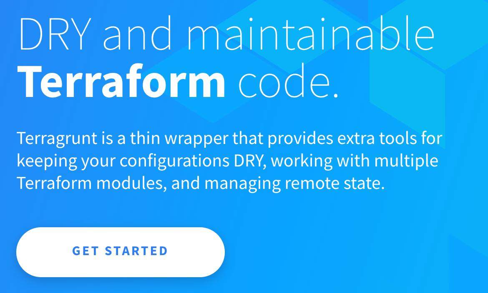
Demo：Terragrunt 实践
.
├── deploy
│ ├── department1
│ │ ├── team1
│ │ │ ├── account.hcl
│ │ │ └── cvm
│ │ │ └── terragrunt.hcl
│ │ └── team2
│ │ ├── account.hcl
│ │ └── cvm
│ │ └── terragrunt.hcl
│ ├── department2
│ │ ├── team1
│ │ └── team2
│ └── terragrunt.hcl
├── modules
Terragrunt 建议
- 谨慎使用
- 对 Terraform 版本支持的问题
- 社区和维护问题
- Terraform + Modules 仍是主流